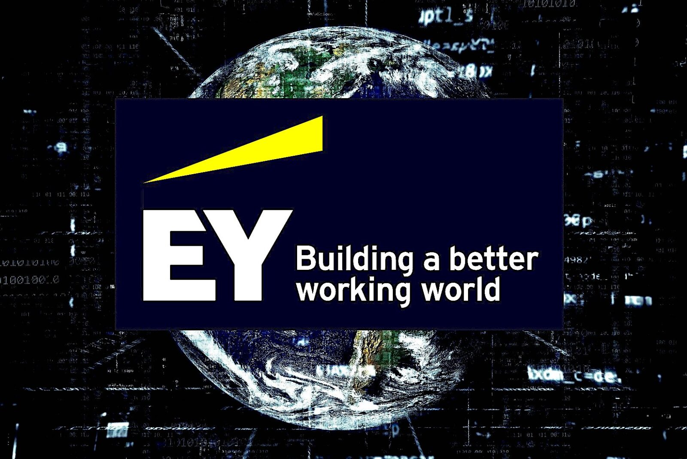
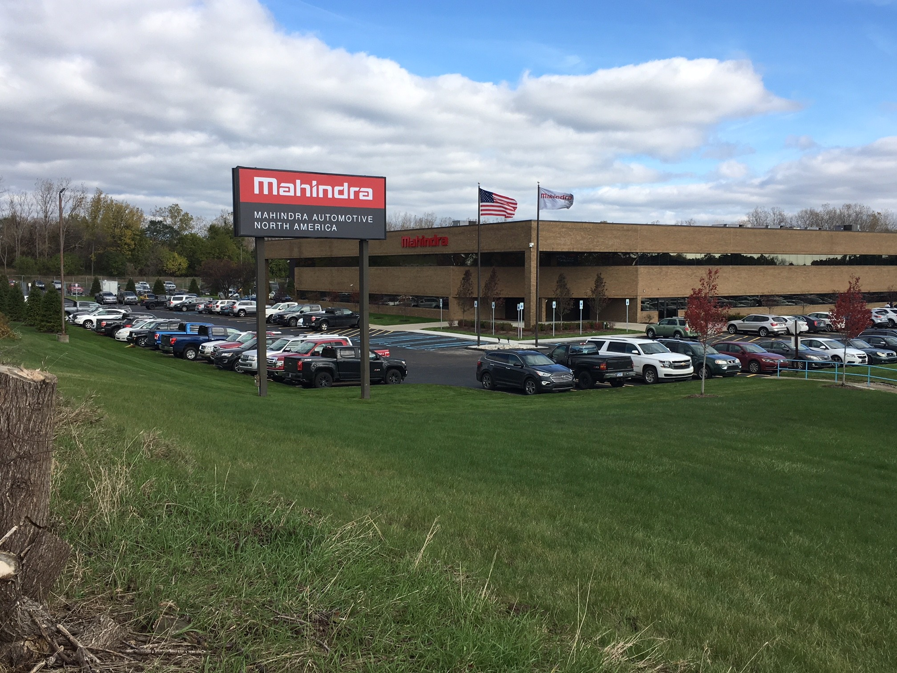

Data Scientist
Results-driven Data Scientist with over 4.5 years of experience in deploying advanced machine learning and statistical modelling techniques to extract insights and solve complex business problems. Proficient in machine learning methodologies, data mining, predictive modelling, and data visualization. Experienced in cloud computing, big data ecosystems, and deep learning.
Industrial Experience
 At DBS, I played a key role in developing a Feature Mart, integrating daily financial, non-financial, and product summary data to
ensure high granularity and accuracy for enhanced data accessibility and actionable insights. I also developed a classification model
for two interaction codes—term deposits and remittances (inward and outward)—leveraging advanced machine learning techniques to achieve
high accuracy and reliability. Additionally, I built an automated campaign pipeline to deliver personalized nudges for product consumption,
usage, and retention, enabling data-driven marketing campaigns that significantly improved customer engagement and retention
At DBS, I played a key role in developing a Feature Mart, integrating daily financial, non-financial, and product summary data to
ensure high granularity and accuracy for enhanced data accessibility and actionable insights. I also developed a classification model
for two interaction codes—term deposits and remittances (inward and outward)—leveraging advanced machine learning techniques to achieve
high accuracy and reliability. Additionally, I built an automated campaign pipeline to deliver personalized nudges for product consumption,
usage, and retention, enabling data-driven marketing campaigns that significantly improved customer engagement and retention
At EY, I began working on demand forecasting for the Czech Republic market for Unilever,
the world’s largest FMCG company. It was a new domain for me, making the initial days challenging, but with guidance from a demand planner and my Coursera learning,
I quickly adapted. Due to my strong performance, I was promoted from Associate Consultant to Consultant within five months.
I then transitioned to the UK market, one of the most complex markets we handled for Unilever.
The project was in a difficult phase, with numerous unresolved tickets from demand planners.
After addressing these issues, we proposed and developed UK Demand Forecasting Gen3, incorporating pricing and promotional features.
I collaborated with PhDs and studied research papers to analyze pre- and post-promotion impacts and price inflation.
After a year of rigorous research and development, UK Gen3 was successfully deployed in production.
At Mahindra, I worked on the WAP Project, which identified potential customers looking to exchange their vehicles.
I developed and deployed models for nine commercial vehicles, collaborating with multiple teams to ensure that service managers
received pop-ups when entering a chassis number.
I then transitioned to the Strategic Sourcing Unit, where I was initially tasked with understanding Profit & Loss (P&L)
and Balance Sheets (BS). To my surprise, I was assigned to Financial Forecasting, where we extracted BS and P&L data for 3,000+
suppliers and developed a scoreboard approach across 10 categories, including funding, liquidity, and profitability.
Simultaneously, I worked on multiple projects, including Commodity Forecasting for L1 and L2 materials to support price negotiations
and assisted in developing several Qlik Sense dashboards.
Appreciation & Recognition


Comment from Partner : Pillar of very aggressive and important project. He has become a GoTo person for almost the entire team. Add on to his sweet attitude, and the mix is what every company wants.